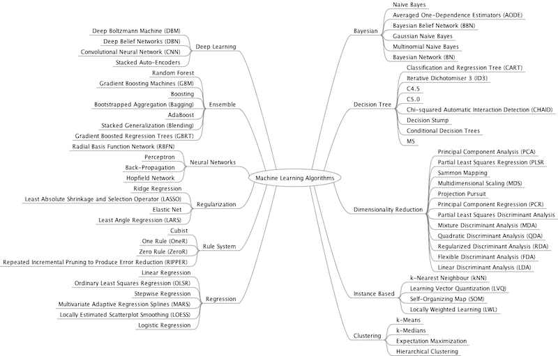
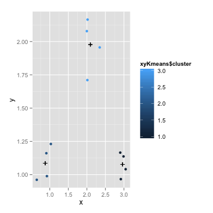

Principles of Analytic Graphics
-
Show comparisons, evidence for a hypothesis is always relative to another competing hypothesis; always ask compare to what.
-
Show causality, mechanism, explanation and systematic structure.
-
Show multivariate data, the world is multivariable, we can gat a more clearly picture of facts as we get more variables.
-
Integration all the evidence, use plot, tables, image, all statistics functions to show result.
-
Describe document evidence with appropriate lables, sources and scales, keep your data credible.
-
Content is king.
Plotting systems
Base Plotting System, example:
library(datasets)
data(cars)
with(cars, plot(speed, dist))
Lattice System, plots are created with a single function call.
ggplot2 System, example:
library(ggplot2)
data(mpg)
qplot(displ, hwy, data = mpg)
Base plotting system
Core plotting and graphics engine in R is encapsulated in graphics and grDevices packages.
- graphics contains plotting function such as plot, hist, boxplot etc.
- grDevices contains various graphics devices such as X11, PDF, PostScript, PNG etc.
To steps to draw a basic plot:
- Initializing a new plot.
- Add annotate to the plot.
Histogram:
library(datasets)
hist(airquality$Ozone)
Scatterplot:
with(airquality, plot(Wind, Ozone))
Boxplot:
library(datasets)
boxplot(Ozone ~ Month, airquality)
Some key graphics parameters:
- pch, plotting symbol.
- lty, line type.
- lwd, line width.
- col, plotting color.
- xlab, x-axis label.
- ylab, y-axis label.
Par function is used to specify golbal graphics parameters that affect all plots in R session.
- las, orientation of axis labels on plot.
- bg, background color.
- mar, the margin size.
- oma, the outer margin size.
- mfrow, number of plots per row, row-wise.
- mfcol, number of plots per row, column-wise.
Some key graphics functions:
- plot, make a scatterplot or other type of plots.
- lines, add lines to a plot.
- points, add points to a plot.
- text, add text labels to a plot.
- title, add annotations to plot.
- mtext, add arbitrary text to margins.
- axis, add adis ticks/labels.
- legend, add legend.
Example:
library(datasets)
with(airquality, plot(Wind, Ozone))
title(main = "NYC Ozone and Wind")
with(subset(airquality, Month == 5), points(Wind, Ozone, col = "blue"))
with(subset(airquality, Month != 5), points(Wind, Ozone, col = "red"))
legend("topright", pch = 1, col = c("blue", "red"), legend = c("may", "other months"))
Draw two plots:
par(mfrow = c(1, 2))
with(airquality,{
plot(Wind, Ozone, main = "NYC Ozone and Wind")
plot(Solar.R, Ozone, main = "Ozone and Solar Radiation")
})
Draw data with groups. Firstly I generate a factor grouped data consist 50 male and 50 female:
g <- gl(2, 50, labels = c("male", "female"))
plot(x, y, type = "n")
Type = "n" means draw the plot without data first. Then draw the data with groups:
points(x[g=="male"], y[g=="male"], col = "blue")
points(x[g=="female"], y[g=="female"], col = "red")
Graphics Devices
Graph device is sth where you can make a plot appear. The most common place for plot is screen, on mac called quartz, windows called windows, linux/unix called x11.
Create a pdf file:
pdf(file = "myplot.pdf")// open pdf file device
with(data, plot(x, y))
title(main = "my Data")
dev.off // close the pdf file device
vector and bitmap are 2 baskc types of file devices.
Vector formats:
- svg
- win.metafile
- postscript
Bitmap formats:
- png
- jpeg
- tiff
- bmp
Plotting can only occur on one graphic device at one time. Find the current graphic device:
dev.cur()
Use dev.copy to copy a plot from one device to another.
dev.copy(png, file = "1.png")
dev.off()
//or
dev.copy2pdf
Lattice Plotting System
Lattice package built on top of grid, u have to create one plot at one in a single function call, specify all arguments in the function call.
Margins, spacing are automatically handled.
It's ideal for creating conditioning plots in same datasets with different conditions.
- xyplot, main function for creating scatterplots.
- bwplot, boxplots.
- histogram.
- stripplot, similar as a boxplot but with actual points.
- dotplot, plot dots on "violin strings".
- splom, scatterplot matrix.
- levelplot, countourplot, for plotting "image" data.
xyplot:
library(lattice)
library(datasets)
xyplot(Ozone ~ Wind, data = airquality)
with conditions:
airquality2 <- transform(airquality, Month = factor(Month))
xyplot(Ozone ~ Wind | Month, data = airquality2, layout = c(5, 1))
Compare lattice(L) with base plotting system(BPS):
BPS plot data directly to graphics device; L return an object of class trellis, then use print functions plotting data to graphics device. Object of trellis can be stored, and on command line, they are auto-printed.
Panel function controls what happens inside each panel plot.
Generate some test data:
x <- rnorm(100)//生成标准正态分布数据
f <- rep(0:1, each = 50)//生成100个数据，分别为0，1
y <- x + f - f * x + rnorm(100, sd = 0.5)//生成线性数据，因为f包含0与1，因此f = 0时实际上y = x + rnorm(100, sd = 0.5)依旧为标准正态分布，非线性
f <- factor(f, labels = c("Group1", "Group2"))//两个组分别命名
xyplot(y ~ x | f, layout = c(2, 1))
Add panel functions:
xyplot(y ~ x | f, panel = function(x, y, ...){
panel.xyplot(x, y, ...)//call default panel function
panel.abline(h = median(y), lty = 2)//add a abline在中位数处添加abline
panel.lmline(x, y, col = 2)//添加回归线add a regression line
})
ggplot2
Is created for shorten the distance from mind to paper. Build mapping from data to points, lines, bars, colour, shape, size.
Data have to be organized in data frame.
Factors are very important because they indicate subsets of data. Example:
library(ggplot2)
head(mpg)
qplot(displ, hwy, data = mpg)
Use conditions:
levels(mpg$drv)//it's a factor variable
qplot(displ, hwy, data = mpg, color = drv)
Add a smoother argument to see the overall trend of data:
qplot(displ, hwy, data = mpg, geom = c("point", "smooth"))
Point argument draws points on screen and smooth argument generate a blue line with gray areas indicates data trend and it's 95% confidence interval.
Generate histogram with only 1 variable:
qplot(hwy, data = mpg, fill = drv)
Use facets to create separate plots. Format of facets is variable1~variable2. variable2 determine the columns of panel, v1 determine the rows of panel.
qplot(displ, hwy, data = mpg, facets=.~drv)
Change geom argument to density to draw plot with density smooth:
qplot(hwy, data = mpg, geom="density", color = drv)
To seprate variables, except color, fill, we can use shape argument:
qplot(displ, hwy, data = mpg, shape = drv)
Use argument method = "lm" to draw smooth line with standard linear regression model instead of loess.
Instead building a plot in one function like lattice, ggplot2 allow user to build plots layer by layer. and the key points are:
- prepare a data frame.
- aesthetic mapping determine data color, size etc.
- geometric objects are points, lines, shapes, facets.
- statistical transformations determine binning, quantiles and smoothing.
- scales show coding on aesthetic map uses.
- plots then depicted on a coordinate system.
class(mpg)
g <- ggplot(mpg, aes(displ, hwy))
p <- g + geom_point()
print(p)
ps <- p + geom_smooth()
print(ps)
pslm <- p + geom_smooth(method = "lm")
pslmf <- pslm + facet_grid(.~drv)
Make sure your dataframe is labeled approprlately that you didn't have to modify the plot laterly.
Functions to modify plots:
- labels, xlab(), ylab(), labs(), ggtitle().
- geom options.
- theme() function make sense globally, include 2 standard appearance, theme_gray() and theme_bw(), background, legend and so on.
Example:
g <- ggplot(mtcars, aes(disp, hp))
gl <- g + geom_point(color = "steelblue", size = 4, alpha = 1/2)
gl2 <- g + geom_point(aes(color = gear), size = 4, alpha = 1/2)
gllabs <- gl + labs(title = "MYTITLE", x = "dostence", y = "hp size")
gls <- gl + geom_smooth(size = 0.5, linetype = 1, method = "lm", se = FALSE)//se = F means to hide confidence interval
gls + theme_bw(base_family="Times")//white background and times font
Add axis limits to ignore extreme value:
data <- data.frame(x = 1:100, y = rnorm(100))
g <- ggplot(data, aes(x = x, y = y))
gl <- g + geom_line()
gll <- gl + coord_cartesian(ylim = c(-3,3))//limit value in -3 to 3
Machine learning Mindmap

Hierarchical Clustering(层次聚类)
Clustering organize things that are close into groups.
Process:
- define close
- group things
- visualize grouping
- interpret grouping
Cluster analysis is an important and widely used technique. Hierarchical clusting organizing data into a kind of hierachy.
A common approach is agglomerative approach(bottom-up apporach). Find closest two points, put them together, remove the original two points and replace them with the new point. Then repeat this process.
Most important is how to define close.
Distance Metrics:
- Euclidean distance(欧几里德中心距离), calculate correlation similarity.
- Manhattan distance(曼哈顿距离).
- Pearson Correlation Score(皮尔逊相关性系数).
- Jaccard distance(杰卡德系数).
finally will generate a dendrogram(树状图).
Example data set:
x <- rnorm(12, mean = rep(1:3, each = 4), sd = 0.2)
y <- rnorm(12, mean = rep(c(1, 2, 1), each = 4), sd = 0.2)
qplot(x, y)
dist function takes a dataframe or matrix to calculate distance. Default is eucilidean distance.
data <- data.frame(x, y)
xyDist <- dist(data)
xyCluster <- hclust(xyDist)
plot(xyCluster)
This will generate a cluster dendrogram.
Then, need to cut the tree at a proper position, and to get branches.
Merge points together, 2 approaches:
- Average Linkage
- Complete Linkage
Cluster/Visulazie matrix data with hearmap, really useful to visulize high dimension data matrix.
heatmap(datamatrix)
K-means Clustering
Use k-means to summarize high dimensional data, show data patterns, obversations similarity.
K-means clustering is a way to partltloning a group of observations into a fixed number of clusters.
- you should have a sense of how many clusters there are first.
- Pick some random points as centroids of each cluster.
- Assign points to closest centroid.
- Reclaculate centroids.
Example data:
x <- rnorm(12, mean = rep(1:3, each = 4), sd = 0.2)
y <- rnorm(12, mean = rep(c(1, 2, 1), each = 4), sd = 0.2)
qplot(x, y)
Draw k-means:
data <- data.frame(x, y)
xyKmeans <- kmeans(data, centers = 3)
g <- ggplot(data, aes(x, y))
gp <- g + geom_point(xyKmeans$centers)
Now we need add centers on gp, type class(xyKmeans$centers), it's a matrix. Transform it into data frame:
centers <- data.frame(xyKmeans$centers)
centers
gp + geom_point(aes(centers$x, centers$y), shape = 3)
Result:

Dimension Reduction
Is used to solve 2 problems:
- Create a set of variables smaller than the original dataset and columns are uncorrelated with each other.
- Find the best matrix create with fewer varlables but still can explain the origin data(find a lower rank matrix低秩矩阵)(data compression problem.
Use Principle Component Analysis to solve the first problem and use singular value decomposition to handle with the second one.
SVD, decomposition matrix into 3 matrix, U(left singular vector), V(right singular vector), D(diagonal matrix).
PCA, principle components analysis, equal to right singular vector if we subtract mean value then devide by standard deviation.
Before SVD/PCA, we have to handle with missing values. If there has missing values, we have to install impute library and use impute.knn function to fill the missing values.
Working with colors
grDevices package have 2 functions:
- colorRamp
- colorRampPalette
pal <- colorRamp(c("red", "blue"))//return a function
pal(0)//parameter could be 0-1, returns rgb matrix
colorRampPalette:
pal <- colorRampPalette(c(read, blue))//returns a function
pal(2)//parameter could be a integer， return pound key with hexadecimal #FF0000
RColorBrewer Package do provide 3 types of palettes:
- sequantial, go from light to dark, can order data from low to high.
- diverging, light in middle and dark in two sides, used for represents negative - positive data(example -10 to 10).
- qualitative, used to organize categorical data.
library(RColorBrewer)
cols <- brewer.pal(3, "OrRd")
pal <- colorRampPalette(cols)
image(volcano, col = pal(20))
brewer.pal is the only function in this function, takes 2 arguments, first is base color number, second is the palettes name. Use
display.brewer.all()
to get all names.
smoothScatter function used color in brewer:
x <- rnorm(1000)
y <- rnorm(1000)
smoothScatter(x, y)
Other function like rgb()
plot(x, y, col = rgb(0,0,0,0,2), pch = 19)
-- end --